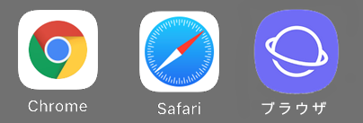

スマホをご利用の方
その１ ホーム画面でチェック
ホーム画面を見るとおそらくこの中のどれかが表示されていると思いますので、探してみてください。
※一番右の地球儀のマークはバージョンによって見た目が違うものもございます。
その２ どれを使ったらいいのか？
この２つならどちらでも良いのですが、分かりやすく説明するために、
Androidの方は「Chrome」、iPhoneの方は「Safari」を使用するようにしてください。
その３ どちらも表示されていない場合は？
もし見つからない場合は、「Google Chrome」を入手しましょう！
こちらをクリックしてダウンロードしてください↓
グーグルクロームをダウンロード